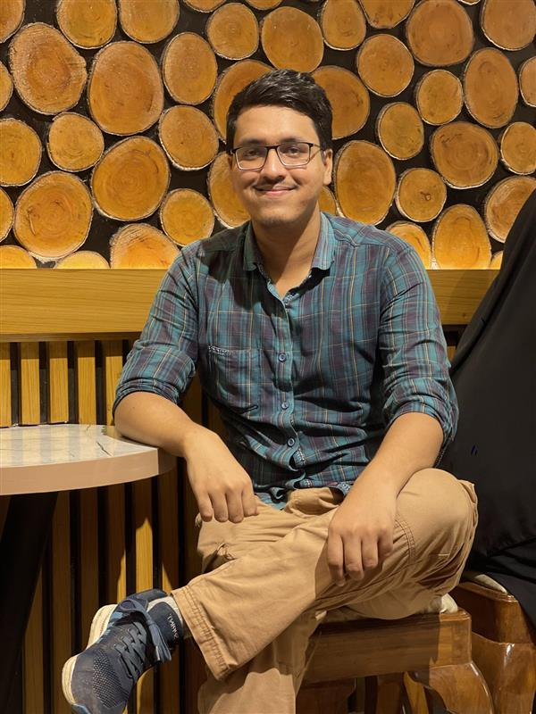

Ragib Shahriar
A passionate 10th semester Computer Science & Engineering student who builds practical C# desktop and full stack web applications while pursuing machine learning research

About Me
Welcome to My Portfolio
Hi! I'm Ragib Shahriar, a passionate computer science student from Jessore, Bangladesh. With a strong foundation in multiple programming languages and frameworks, I specialize in creating robust applications across different platforms.
This video introduces myself, my background and my journey in software development.
I'm always eager to learn new technologies, contribute to meaningful projects and collaborate with like minded professionals. Let's build something amazing together!
Technical Skills
Programming Languages
Databases & Backend
Frontend Tools
Tools
Featured Projects
Research Job Portal
Fall 2024 - 2025
Parliament Building 3D
Summer 2024 - 2025
Online Marketplace
Fall 2025 - 2026
Experience
Freelance C# Desktop Application Developer
Self-employed
- Developed and delivered six desktop applications in C# for university course projects, translating student requirements into functional applications
- Provided hands-on testing, bug fixes and post-delivery support to ensure students met their course submission criteria
- Demonstrated proficiency in desktop application architecture and Windows Forms development
Education
B.Sc in Computer Science and Engineering
2023 - Present
American International University, Bangladesh
CGPA: 3.65 | Dean's List Honors (Fall 2023-2024) with semester GPA of 3.77
Higher Secondary Certificate (HSC)
2018 - 2020
Government M.M College, Jessore
GPA: 5.00
Secondary School Certificate (SSC)
2016 - 2018
Police Line Secondary School, Jessore
GPA: 5.00
Let's Connect
Get In Touch
I'm always interested in hearing about new projects and opportunities. Feel free to reach out!